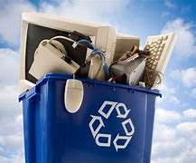

A reciclagem de computadores envolve o processo de desmontagem, recuperação de materiais e descarte adequado dos componentes eletrônicos de computadores pessoais. Esse processo visa reduzir o impacto ambiental causado pelo descarte inadequado de computadores e recuperar recursos valiosos para reutilização na fabricação de novos dispositivos eletrônicos.
Aqui está uma visão geral do processo de reciclagem de computadores:
Os computadores podem ser coletados de várias fontes, como programas de reciclagem eletrônica, empresas de gestão de resíduos, organizações governamentais ou programas de recompra de dispositivos. Os computadores são enviados para instalações de reciclagem específicas.
Eles são classificados com base em sua condição. Alguns computadores podem estar em bom estado de funcionamento e podem ser recondicionados para revenda ou doados para instituições de caridade, enquanto outros são destinados à reciclagem de materiais.
Os computadores são desmontados manualmente ou com o auxílio de máquinas para separar os componentes. Gabinetes, placas-mãe, discos rígidos, memória RAM, fontes de alimentação, unidades de CD/DVD e outros componentes são separados.
Os componentes desmontados são processados para recuperar materiais valiosos. Placas-mãe e outros componentes eletrônicos contêm metais preciosos, como ouro, prata e cobre, que podem ser extraídos usando métodos químicos ou térmicos. Discos rígidos e outros dispositivos de armazenamento podem ser desmontados para recuperar os materiais magnéticos e metálicos.
Os componentes que não são passíveis de recuperação ou reutilização são descartados de forma segura. Isso pode envolver o envio desses materiais para instalações de tratamento de resíduos eletrônicos adequadas, onde são processados de forma apropriada, minimizando os riscos ambientais e à saúde.
Os materiais recuperados são vendidos para empresas especializadas em reciclagem eletrônica. Essas empresas podem processar os materiais para reutilização na fabricação de novos componentes eletrônicos ou enviá-los para fundições para serem transformados em matéria-prima.
Além da reciclagem de materiais, alguns programas de reciclagem de computadores também se concentram na reutilização de equipamentos funcionais. Nesses casos, os computadores são apagados, restaurados e revendidos como dispositivos usados ou doados para organizações sem fins lucrativos.
A reciclagem de computadores desempenha um papel importante na redução do desperdício eletrônico, na conservação de recursos naturais e na prevenção da contaminação ambiental. Ao descartar corretamente os computadores, podemos contribuir para um ciclo mais sustentável de produção e consumo de equipamentos eletrônicos.